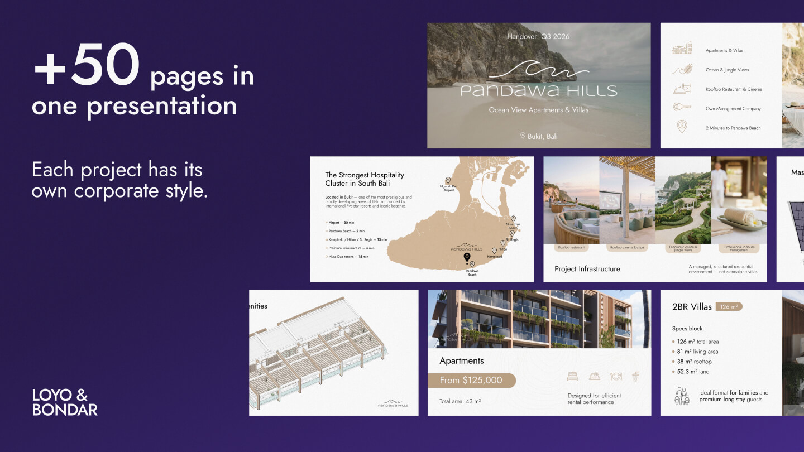
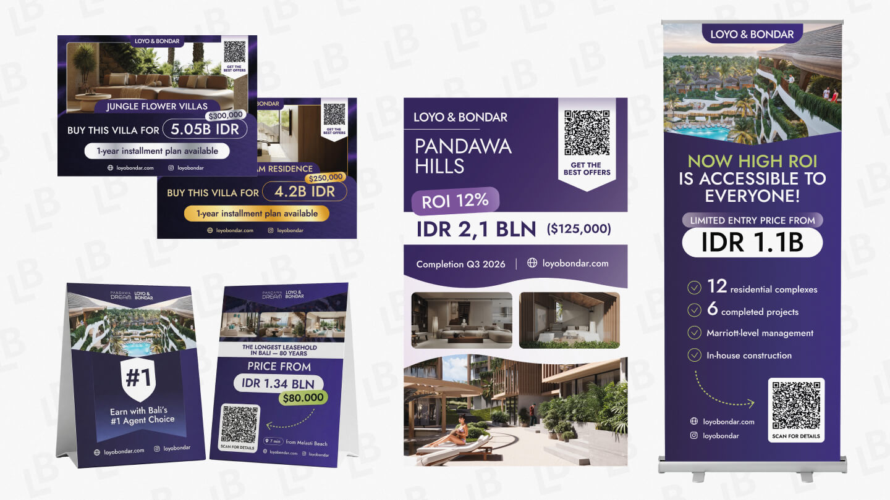
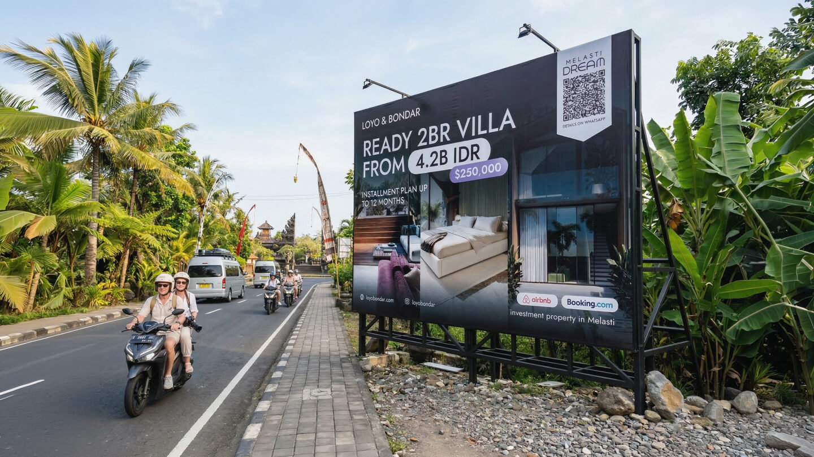
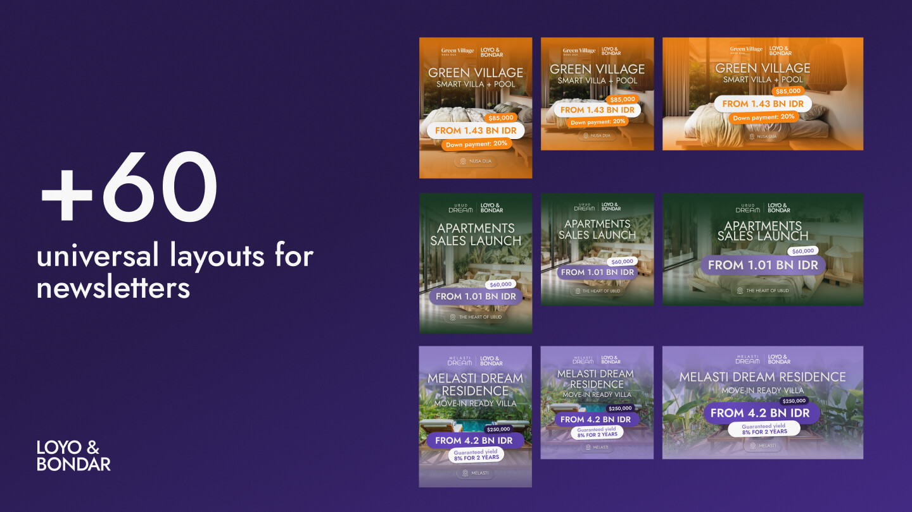
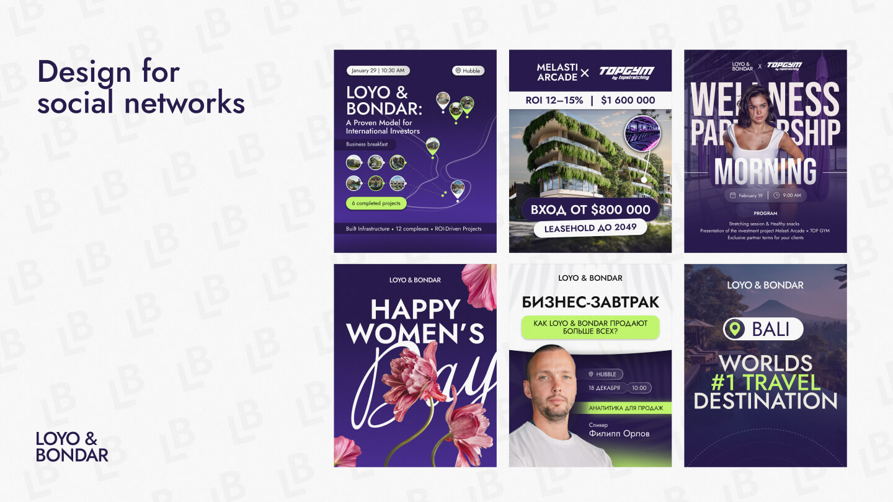

LOYO & BONDAR
LOYO & BONDAR — a premium villa developer on Bali with a massive project pipeline and a design operation that couldn't keep up. No brand guidelines, no clear briefs, four marketing managers with four different agendas — and a continuous flow of deliverables that had to look premium regardless. I built the structure that made execution possible.
Why
LOYO & BONDAR is one of Bali's serious players in premium real estate — multiple residential complexes, events, investor relations, partner communications. The design workload was real and constant, but the infrastructure around it wasn't. Briefs arrived fragmented, sometimes AI-generated, rarely actionable. Four marketing managers each with their own priorities, none with a clear picture of what the designer actually needed to start working. The result: good tasks turned into bad briefs turned into wasted cycles. Someone had to sit upstream of execution and fix that before it reached the designer.
What
I came in as art director — defining what each task actually required before any design began. I analysed incoming briefs, identified what was missing, formulated the right questions back to the client, and rebuilt each request into something executable. From that point a graphic designer executed; I reviewed, directed revisions, and approved before anything went to the client. Over the course of the project we covered the full spectrum: investor presentations, partner decks, buyer-facing materials, OOH — banners, posters, event signage, venue maps, physical branding for sponsored events. Each audience had its own communication logic, which I defined — the client hadn't articulated this distinction themselves.
How
The challenge wasn't design — it was signal extraction. Every brief needed to be decoded: what does this person actually need, who is it for, what decision should it drive? I built that filter so the designer could move without stopping to interpret. In peak weeks we produced 100+ slides without sacrificing consistency, because the system was clear enough to scale. The visual direction was built without a brand guide — using the client's stronger competitor as a reference point and then finding the differentiation within that frame. The project ended when the client restructured. The last request came after the restructure — handled on an hourly basis, delivered, approved. Clean exit.
What it looks like





What we delivered
Peak output — investor, partner, and buyer materials in parallel
Defined and separated by me — client hadn't articulated the distinction
Visual system built from scratch under a competitive reference frame
Four different brief sources — one unified design output
Need someone who can manage complexity?
Multiple audiences, tight deadlines, high stakes — tell me about it.
Get in touch